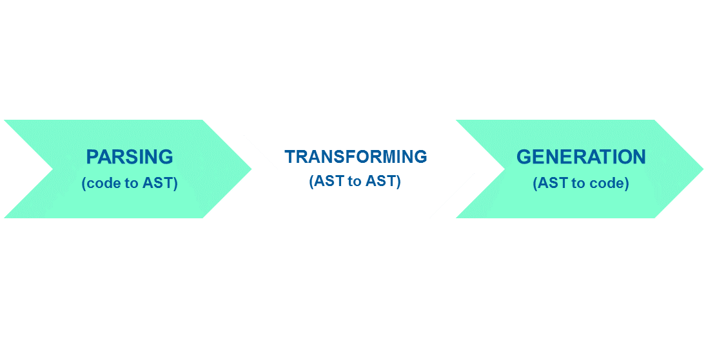

Modern JavaScript Stack
PART 1
Package Managers, Transpilers
and Module Bundlers
by Gali

"JavaScript Fatigue"
JavaScript runtime environment
uses Chrome's V8 JavaScript engine
Non-blocking
For servers and applications
Comes with NPM
npm
Package
directory of files
package.json
depends on other packages
the command line interface (CLI)
Commands
| command | what it does |
|---|---|
npm init |
create a new npm package |
npm install |
install package.json deps in local node_modules folder |
npm install <package> |
install a package in local node_modules folder |
npm install -g <package> |
install a package in globally |
Commands
| command | what it does |
|---|---|
npm install --save <package> |
installs package locally, saves as dependencies in package.json |
npm install --save-dev <package> |
installs package locally, saves as devDependencies in package.json |
npm uninstall --save <package> |
removes package locally, deletes as dependencies in package.json |
npm uninstall --save-dev <package> |
removes package locally, deletes as devDependencies in package.json |
SemVer
MAJOR. MINOR. PATCH

~3.2.4 === 3.2.*
^3.2.4 === 3.*.*
alternative to npm client
October 2016
by Facebook in collab with Exponent, Tilde and Google
still uses npm registry
Installation
choco install yarnnpm install -g yarnCommands
| npm | yarn |
|---|---|
npm init |
yarn init |
npm install |
yarn |
npm install <package> |
yarn add <package> |
npm install -g <package> |
yarn global add <package> |
Commands
| npm | yarn |
|---|---|
npm install --save <package> |
yarn add <package> |
npm install --save-dev <package> |
yarn add --dev <package> |
npm uninstall --save <package> |
yarn remove <package> |
yarn.lock
Speed
expresssource: ’s Yarn vs npm — Is Yarn really better?, Nikhil John, medium.com
in comes npm@5
May 2017
npm@5 features
package-lock.json--save is now default--prefer-offline--offline
speed improvements
Speed
express-generatorsource: npm@5 — Yarn killer?, Nikhil John, medium.com/netscape
Quiz!
Go to https://kahoot.it/
JavaScript Engines
| Chrome | V8 |
| Firefox | SpiderMonkey |
| Safari | JavaScriptCore |
| Edge | Chakra |
ECMAScript Specification (ECMA-262)
ECMA Technical Committee 39 (TC39)
The TC39 Process
Problem:
JavaScript engines don't comply right away
https://kangax.github.io/compat-table/es6/
compiler for writing next-generation JavaScript
tool for manipulating Abstract Syntax Tree (AST)
what's AST?
logical structure of the program represented through a tree
Stages of Compilation
| parser | babylon |
| transformer | transform plugins |
| generator | babel-generator, prettier |